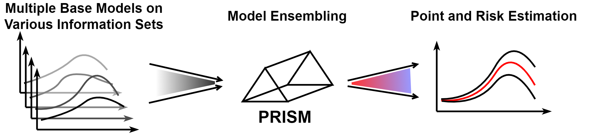
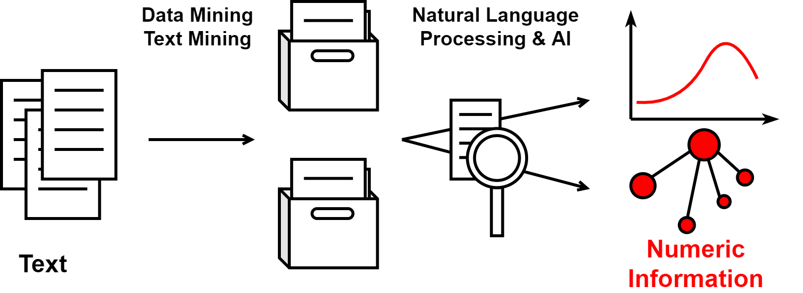
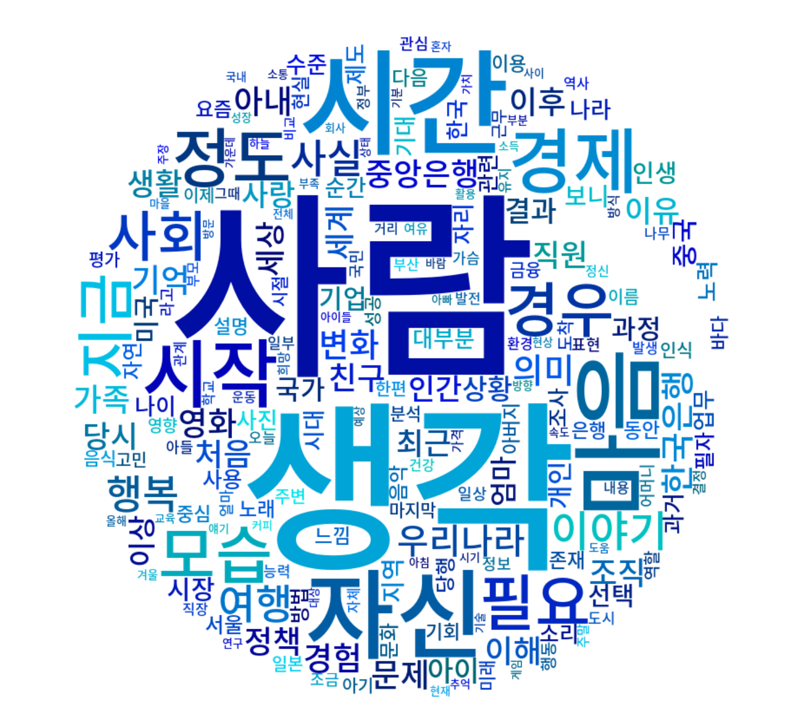

ABOUT ME

I am an Assistant Professor of Statistics at Sookmyung Women's University and an Adjunct Professor of Quantitative Applied Economics at Sungkyunkwan University. Before joining SMU, I served as a Senior Economist in the Office of Economic Modeling and Policy Analysis at the Bank of Korea for 14 years. I completed my Ph.D. in Statistics at Pennsylvania State University, focusing on interpretable statistical learning, advised by Dr. Jia Li, and hold a B.A. in Economics and Statistics from Korea University.
Education
- Ph.D. Statistics, Pennsylvania State University, 2016 - 2021
- B.A. Economics and Statistics, Korea University, 2005 - 2011
Research Interests
My research interests span a range of topics, including:
- XAI, interpretable neural networks and machine learning,
- Big data analytics for social science, economics, and business,
- Text-related statistical modeling, high-dimensional data mining, non-parametric methods.
PROFESSIONAL EXPERIENCE
- 숙명여자대학교 조교수, 2024 - 현재
[Assistant Professor, Sookmyung Women's University of Statistics] - 성균관대학교 퀀트응용경제학과 초빙교수, 2023 - 현재
[Adjunct Professor, Sungkyunkwan University of Quantitative Applied Economics] - 한국은행 시니어 이코노미스트 (조사국, 경제모형실, 경제통계국, 금융시장국), 2011 - 2024
[Senior Economist, Bank of Korea (BOK)] - 한국은행 경제모형실 자문위원, 2025
[Committeer of the Office of Economic Modeling and Policy Analysis, Bank of Korea (BOK)] - 한국개발연구원 실시간경제진단 자문위원, 2024
[Committeer of the Real-Time Economic Diagnosis, Korea Development Institute (KDI)] - 소상공인진흥공단 소상공인체감경기지수 자문위원, 2024
[Committeer of the Small Business Market Business Survey Index(BSI), Small Enterprise & Market Service (SEMAS)] - 한국증권금융 채용출제위원, 2024
[Committeer of the Recruitment Exam, Korea Securities Finance Corp. (KSFC)] - 한국은행 채용출제위원, 2021
[Committeer of the Recruitment Exam, Bank of Korea (BOK)]
PROJECTS & PATENTS
- 정책변화와 시장심리를 고려한 가계대출 및 주택시장 예측, 2025, 한국은행
[Forecasting Household Debt and the Housing Market with Policy Changes and Market Sentiment, 2025, Bank of Korea (BOK)] - 회계분식위험 선정기준에 대한 연구, 2025, 한국공인회계사회
[Study on the Criteria for Detecting Accounting Fraud Risk, 2025, Korean Institute of Certified Public Accountants (KICPA)] - AI 기반 공간 맞춤형 미술작품 추천 및 설치 연계형 오픈 아트 플랫폼 개발, 2025
[Development of an AI-Based Open Art Platform for Space-Customized Artwork Recommendation and Installation Integration, 2025] - 빅데이터를 이용한 환율 변동성 예측, 2025, 국회예산정책처
[Forecasting Exchange Rate Volatility Using Big Data, 2025, National Assembly Budget Office (NABO)] - 뱅크런 징후의 조기 포착을 위한 경보체계 구축, 2024, 예금보험공사
[Early Warning System Construction for Detecting a Bank Run, 2024, Korean Deposit Insurance Corporation (KDIC)] - 비정형 금융경제 데이터의 정량화에 대한 연구, 2022, 한국은행
[Using Noise Filtering and Sufficient Dimension Reduction Method on Unstructured Economic Data, 2022, Bank of Korea (BOK)] - 빅데이터를 이용한 실시간 민간소비 추정, 2021, 한국은행
[Real-Time Private Consumption Prediction Using Big Data, 2021, Bank of Korea (BOK)] - [특허] 뉴스 텍스트 기반 경제지표 작성장치, 텍스트 지표를 이용한 경기 예측 방법 및 시스템
[(Published Pattent) News Text-based Economic Indicator Calculation Device, Economy Prediction Method and System Using Text Indicators], (10-2022-0059258) - [특허] 동기화된 설명 강화 신경망의 학습 및 추론 방법 및 장치
[(Published Pattent) Learning and Inference Method and Device of Synced Explanation-Enhanced Neural Network], (10-2025-0121763)
PUBLICATIONS
* Corresponding author
Peer-reviewed Journal Articles
( International Journals : SCIE/SSCI )
- Chang, Y-L., Seo, B.* (2026). Using Explainable Artificial Intelligence to Envision the Future of Work and the Workforce – From Prediction to Explanation. Technology in Society. 84.
[SSCI, Top 0.5% Social Science, IF 12.5] - Yoo, J., Seo, B.*, & J, An. (2025). Who Pays When Zombie Firms Persist? Asymmetric Debt Conditions by Credit Rating. . Finance Research Letters, 108616.
[SSCI, Top 4.8% Finance] - Yoo, J. & Seo, B.* (2025). Deposit Competition and Depository Institution Risk: Do Interest Margins Matter? Emerging Markets Finance and Trade. 1-21.
[SSCI, Q1 Economics] - Seo, B.* (2025). Econometric Forecasting Using Ubiquitous News Text: Text-enhanced Factor Model. International Journal of Forecasting, 41(3), 1055-1072.
[SSCI, Top 3.1% Economics] - Seo, B.*, & Li, J. (2024). Explainable machine learning by SEE-Net: closing the gap between interpretable models and DNNs. Scientific Reports, 14, 26302.
[SCIE, Q1 Multidisciplinary][pdf][code] - Seo, B.*, Lee, Y., & Cho, H. (2024). Measuring News Sentiment of Korea Using Transformer. Korean Economic Review, 40(1), 149-176.
[SSCI, Economics][pdf] - Seo, B.*, Lin, L., & Li, J. (2022). Mixture of Linear Models Co-supervised by Deep Neural Networks. Journal of Computational and Graphical Statistics, 31(4), 1303-1317.
[SCIE, Q1 Statistics][arXiv][code] - Seo, B.*, Lin, L., & Li, J. (2021). Block-wise Variable Selection for Clustering via Latent States of Mixture Models. Journal of Computational and Graphical Statistics, 31(1), 138-150.
[SCIE, Q1 Statistics][code] - Li, J., Seo, B., & Lin, L. (2019). Optimal transport, mean partition, and uncertainty assessment in cluster analysis. Statistical Analysis and Data Mining: The ASA Data Science Journal, 12(5), 359-377.
[SCIE, Q1 Statistics][code]
( Domestic Journals : KCI )
- Shin, S.J., & Seo, B.* (2024). Real-Time Private Consumption Prediction Using Big Data. (in Korean). The Korean Journal of Applied Statistics, 37(1), 13-38.
- Yoo, J.K., Park, Y., & Seo, B.* (2024). Using Noise Filtering and Sufficient Dimension Reduction Method on Unstructured Economic Data. (in Korean). The Korean Journal of Applied Statistics, 37(2), 119-138.
Policy Papers
- Seo, B., (2024). 빅데이터 기반 민간소비 패턴 분석과 전망[Private Consumption Pattern Analysis and Forecasting Based on Big Data]. BOK Issue Note, No.2024-24.
- Seo, B.*, Lee, D., & Cho, H. (2023). Point and Risk estImation using an enSemble of Models for Nowcasting: PRISM-Now. BOK Working Paper, No.2023-27.
 - Seo, B., (2023). Econometric Forecasting Using Ubiquitous News Text: Text-enhanced Factor Model. BOK Working Paper, No.2023-10.
- Seo, B., (2023). AI 알고리즘을 이용한 산업모니터링: 증권사 리포트 텍스트 분석[Industry Monitoring Using AI Algorithm: Analyst Reports Text Mining]. BOK Issue Note, No.2023-5. [pdf]
- Shin, SJ., & Seo, B., (2022). 빅데이터를 이용한 실시간 민간소비 추정[Real-Time Private Consumption Prediction Using Big Data]. BOK Working Paper, No.2022-16. [pdf]
- Seo, B.*, Lee, Y., & Cho, H., (2022). Machine-Learning-Based News Sentiment Index (NSI) of Korea. BOK Working Paper, No.2022-15. [pdf]
- Seo, B., (2022). 뉴스 텍스트를 이용한 경기 예측: 경제부문별 텍스트 지표의 작성과 활용[Economic Forecasting Using News Texts: The Compilation and Usage of Text-based Economic Field Indicators]. BOK Issue Note, No.2022-18. [pdf]
 - Seo, B., Lee, Y., Cho, H., (2022). 기계학습을 이용한 뉴스심리지수(NSI)의 작성과 활용[Comilation and Usage of News Sentiment Index (NSI) Using Machine Learning]. National Account Review, 2022(1), 68-90. [pdf]
In Progress
- Seo, B. & Yoo, J., Collective Expert Intelligence : Automated Algorithms for Industry Analysis Using AI and Language Modeling. Submitted.
- Seo, B.*, Lee, D., & Cho, H., Point and Risk estImation using an enSemble of Models for Nowcasting: PRISM-Now. Submitted.
- Lee, Y.J., Kim, S., Seo, B., & Park, K.Y. Measuring Monetary Policy Surprises Using Text Mining: The Case of Korea. Will be submitted soon (the manuscript is available upon request).
- Seo, B., Explainable Neural Mixture Modeling For Clustering.
TEACHING
(Statistics & Engineering)
- Text Mining & Natural Language Processing (UG in Stat at SMU)
- Statistical Machine Learning (UG in Stat at SMU)
- Statistical Methods I (MS in Stat at SMU)
- Practicum in Statistical Analysis (UG in Stat at SMU)
- Introduction to Probability and Stochastic Processes (UG in Engineering at PSU)
- Elementary Statistics (UG in Stat at PSU)
(Economics & Business)
- Big Data Analytics in Macroeconomics (MA in Econ at SKKU)
- Machine Learning for Finance and Economics (MA in Stat at Korea Univ.)
- Topics in Data Information (MA in Grad School of Policy Studies at Korea Univ.)
- Data Mining for Automated Economic Analysis (Working Professional in Finance & Econ)
MEDIA COVERAGE
News Coverage
- 한은·통계학회, 공동포럼 개최…"AI·빅데이터 기반 통계 모색" (뉴시스, 2024.09.19)
- 한은 경제모형실, 빅데이터로 하반기 분석해보니 "소비 개선·물가 둔화" (아주경제, 2024.08.25)
- 한국은행, 단기 경제 전망 모형 '프리즘Now' 개발 (연합뉴스, 2023.12.19)
- AI 텍스트 분석, 숫자 넘어선 예측 가능 (연합인포맥스, 2023.02.16)
- 챗 GPT 등 자연어 기술로 경제 분석 혁신 될 것 (금융경제신문, 2023.02.16)
... - (SBS 모닝와이드 - 친절한 경제, 2023.02.16)
Magazine
- 설명가능한 인공지능? 한은소식, 2021(9), 36-39.
- 텍스트마이닝으로 분석한 한은소식. 한은소식, 2020(5), 20-21.
 - 머신러닝, 유학, 그리고 무언가를 배운다는 것. 한은소식, 2020(3), 11-13.
CODES
Providing Theme Frequency in News Indices (TFNI), Text-based Business Confidence Indicators(TBCI).
Time-series pre-processing, period conversion, normalization, visualization, and more.
Interpretable non-linear regression or classification based on "Mixture of Linear Models Co-supervised by Deep Neural Networks"
A Block-wise Variable Selection Method for High-dimensional Clustering via Latent States of Mixture Models
Mean Partition, Uncertainty Assessment, Cluster Validation and Visualization Selection for Cluster Analysis
Text Indices Hub, AWS interactive web application,
tspoon, Python package on PyPi,
pip install tspoonMLM, Python package on GitHub,
import mixturelinearmodel
from mixturelinearmodel import MixtureLinearModel
from utils import plot_mosaic, plot_ci, explainable_tree, explainable_condition, explainable_dim, highest_explainable_dim, plot_id_1d, plot_id_2d, plot_id_3dHDclustVS, R package on GitHub,
install.packages("devtools")
devtools::install_github("seo-beomseok/HDclustVS")
library(HDclustVS)
?HDclustVSOTclust, R package on CRAN,
install.packages("OTclust")
library(OTclust)
?OTclust